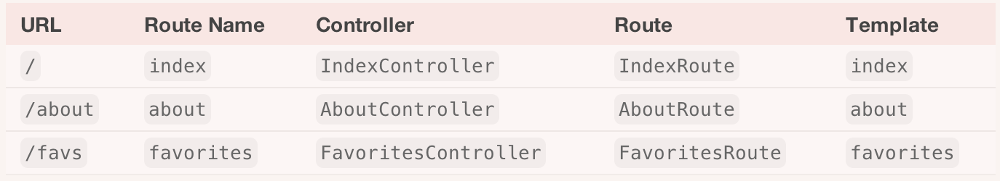
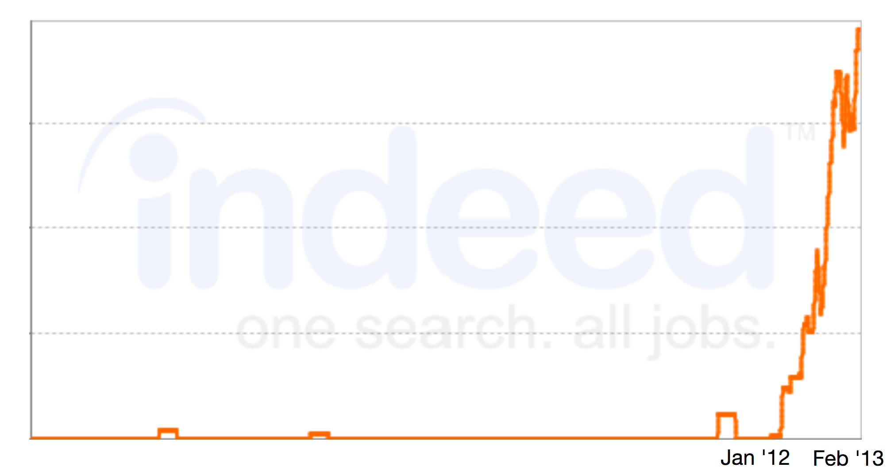

Ember.js
An Introduction
For OttawaJS & Ember Ottawa
Owain Williams
Front-End Engineer @ Toushay
What is this Ember?
A JavaScript MVC Framework
Yes...another one!
Applications
How do you build your App?
Windows used...
.Net
Mac OS & iOS used...
Cocoa
Python has...
Django
Ruby has...
Rails
JavaScript has...
jQuery...!?!?
0_o
Client-Side MV*
- Backbone
- Knockout
- Angular
- Batman
- Ember
- Spine
So, what is Ember?
A framework for creating
Ambitious Web Application
[Developers] need both sophisticated tools and the right vocabulary of concepts to help them communicate and collaborate
- Manage Complexity
- Eliminate Boilerplate
- Application Structure
- Conventions
[Ember] aims to reduce the complexity created by the links between many moving pieces by clearly defining how communication occurs between parts of your application
By eliminating trivial choices and making the answers conventional, you can focus on non-trivial problems.
[Developers] don't want to think about building abstractions at the same time as using these abstraction
Conventions
- Reduce code
- Eliminate trivial choices
- Increase Predictability
- Important for teams
- Quick ramp up
If something is very difficult to do [in Ember], you're probably doing it wrong.- Geoffrey Grosenbach (Peepcode)
Ember's Heritage
Ember's MVC !== Server MVC
It's closer to Cocoa's MVC
Doesn't re-invent concepts
Ruby on Rails
Cocoa
Backbone
Spun out from SproutCore
Who's behind Ember?
Open Source
- Available on GitHub under MIT
- Not a throwaway weekend project
- Started by Yehuda Katz & Tom Dale
- Experienced in Open Source
- > 200 committers
- 8 core team members
Anatomy of Ember
- Classes & Objects
- Models
- Views
- Controllers
- Templates
- Router
- Naming Conventions
- Run-loop
Moduler
- handlebars
- jquery
- ember-metal
- ember-data
- router.js
- route-recognizer
- rsvp.js
- metamorph
- etc...
Classes & Objects
Classes Extend
App.Person = Ember.Object.extend({
firstName: null,
lastName: null
});
var bieber = App.Person.create({
firstName: "Justin",
lastName: "Bieber"
});Mixins
App.Canadian = Ember.Mixin.extend({
says: function(something) {
alert(this.get("firstName") + " says: " + something + ", Eh!");
}
});
App.Person = Ember.Object.extend(App.Canadian, {
firstName: null,
lastName: null
});
var gretzky = App.Person.create({
firstName: "Wayne",
lastName: "Gretzky"
});
gretzky.say("I play hockey"); // alerts "Wayne says: I play hockey, Eh!"
Objects - get/set
App.Person = Ember.Object.extend({
firstName: null,
lastName: null,
});
var john = App.Person.create({
firstName: "John",
lastName: null
});
john.get("lastName"); // => null
john.set("lastName", "Candy");
john.get("lastName"); // => "Candy"
Computed Properties
A property that derives its value by executing a function
Computed Property Example
App.Person = Ember.Object.extend({
firstName: null,
lastName: null,
fullName: function() {
return this.get("firstName") + ' ' + this.get("lastName");
}.property("firstName", "lastName")
});
var avril = App.Person.create({
firstName: "Avril",
lastName: "Lavigne"
});
avril.get("fullName") // "Avril Lavigne"Views & Templates
Templates
- Use Handlebars.js to define your templates
- Describes HTML output
- Bindings aware
Templates Example
< div class="person-name" >
Hello, {{firstName}} {{lastName}}!
< /div >View
- Handles user interaction (clicks, events)
- Adapts styling according to data
- Useful for reusable components
- Usually small & sometimes not needed
View Example
App.MooseView = Ember.View.extend({
templateName: 'moose',
classNameBindings: ['isAngry'],
isAngry: true,
click: function(evt) {
controller.hug(); // => "You hugged a moose!"
}
});Bindings
Template Bindings
< div class="person-name" >
Hello, {{firstName}} {{lastName}}!
< /div >App.ApplicationController = Ember.Controller.extend({
firstName: "Stephen",
lastName: "Harper"
});< div class="person-name" >
Hello, Stephen Harper!
< /div >Models & Data
A model is an object that stores persistent state
Ember Data
An official data persistence library
Goal of to make API communication & persistent state management easier
Controllers
Controllers in Ember
- Deliver data to views & templates
- Decorates model data with display logic
- Can handle actions
- Long lived
Ember.Controller
Proxies to its own properties
Ember.ObjectController
Proxies to its itself, and then to its model's properties
Ember.ArrayController
Proxies to its itself, and then to its models properties, which is an Array of models
Quick Recap

Router
Router
The Router maps the browser's URL to Application State
App.Router.map(function() {
this.route("about", { path: "/about" });
this.route("favorites", { path: "/favs" });
});App.AboutRoute = Ember.Route.extend({
setupController: function(controller) {
// Set the IndexController's `title`
controller.set("title", "My App");
}
});Naming Conventions
Is it ready for prime time?
Ember v1.0 RC1
Ember Data...not so much!
- Not released yet - have to build from GitHub
- It is being used in the wild by lots of people
- API is not stable - will change
- Now Ember is in RC1, focus shifted to stabilizing Ember Data
Growth - jobs
Who's using Ember?
And...Toushay
Toushay has bet on the Web...
...and on Ember
We're Hiring!
Ember in Ottawa?
A new meetup group just for Ember
Sign up at www.meetup.com/Ember-js-Ottawa
Follow @EmberOttawa
Ember Resources
- Official website - emberjs.com
- GitHub Source Code
- Peepcode - Fire up Ember.js ($)
- emberwatch.com
- Follow @EmberWatch & @EmberTips
- Discourse Forum - discuss.emberjs.com
- Stack Overflow - ember.js tag